Negation is often defined in FOL in terms of implication and false, with the definition not{'t} = 't => false. It is possible to define the implication and introduction rules for negation directly, but it is better to derive the rules from the rules for negation and falsehood, rather than defining them as primitive.
The interface for negation declares the syntax as usual, but it establishes a dependency between the Fol_not module and the Fol_false and Fol_implies modules, and it declares the negation definition.
1. Declare the interface for negation by adding these lines to the file fol_not.mli:
include Fol_false include Fol_implies declare "not"{'A} rewrite unfold_not : "not"{'A} <--> implies{'A; ."false"} prec prec_not
The include directives establish the logical module dependencies. The declare directive produces the new syntax, and the rewrite term establishes the definition of not using computational rewriting.
The syntax for negation is established just as in the interface.
2. Define the logical dependencing and syntax for negation in the fol_not.ml file:
include Fol_false include Fol_implies declare "not"{'A}
The display form for negation has the standard format. We include a precedence declaration for parenthesization.
3. Define the display properties of negation:
prec prec_not dform not_df : parens :: "prec"["prec_not"] :: "not"{'A} = tneg slot{'A}
Negation is defined as in the interface, as an implication of falsehood.
4. Provide the definition of negation as implication of falsehood:
prim_rw unfold_not : "not"{'A} <--> implies{'A; ."false"}
Note that this declaration in the implementation states that the definition is primitive, where the interface simply declared the rewrite with the rewrite directive.
The rules for negation include the standard properties of well-formedness and introduction and elimination rules, butthese rules can be derived from the rules for false and implies. In the fol_not.ml file, we declare the rules as interactive, which states that the rules are presumed valid with a proof obligation showing that they can be derived. Here is is listing of the rules.
5. Define the derived inference rules for negation:
interactive not_type 'H : sequent ['ext] { 'H >- "type"{'A} } --> sequent ['ext] { 'H >- "type"{."not"{'A}} } interactive not_intro 'H 'x : sequent ['ext] { 'H; x: 'A >- "false" } --> sequent ['ext] { 'H; x: 'A >- "not"{'A} } interactive not_elim 'H 'J : sequent ['ext] { 'H; x: "not"{'A}; 'J['x] >- 'A } --> sequent ['ext] { 'H; x: "not"{'A}; 'J['x] >- 'C['x] }
The next step is to prove these inference rules, which involves the use of the interactive proof editor. During this proof, we will be making use of the dT tactic to apply the introduction and elimination rules for false and implies. To start the proof, compile the FOL module, compile the proof editor, and start the editor in the module fol_not as follows.
6. Start the proof of the rule for not:
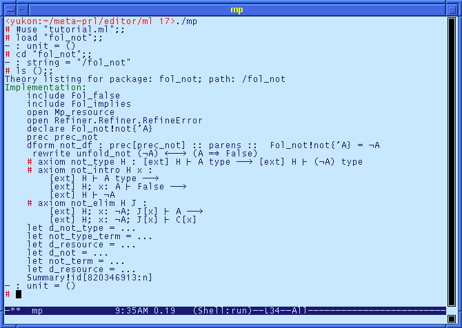
This listing shows that there are three incomplete proof obligations: the axioms for not_type, not_intro, and not_elim.
To prove not_type, cd to the not_type proof:
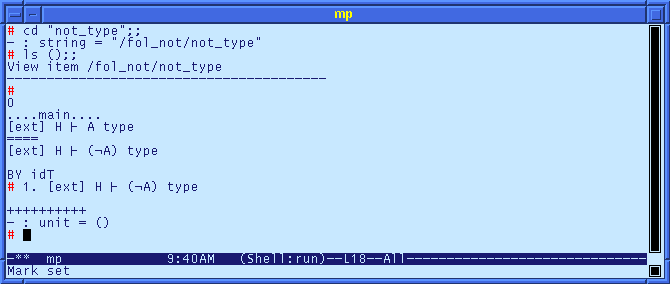
To prove this goal, we first unfold the negation. This requires opening the Fol_not module to get acces to the definition of negation (unfold_not), and then applying the unfold_not rewrite. The rwh function converts the rewrite to a tactic, and applies it to the outermost occurrence of a not term.
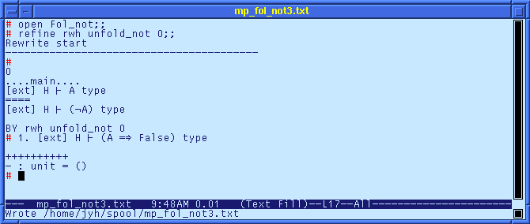
Now that the negation is unfolded to its definition, we can descend into the first subgoal using the down function, then apply the dT tactic to apply the implies_type rule.
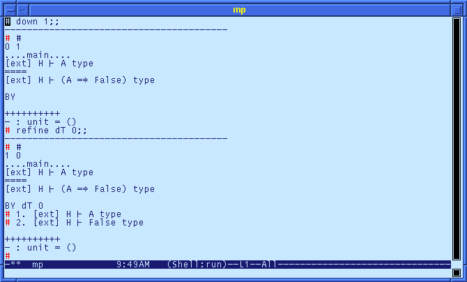
This proof step produces two subgoals: one to prove that 'A is a type, and another to prove that false is a type. For the first goal, we use the typehood assumption, using that tactic nthAssumT.
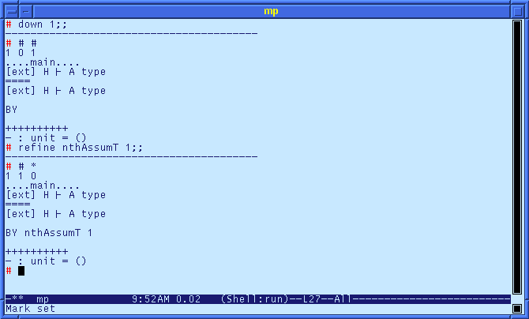
Note that the application of the nthAssumT tactic produced a * on the status line, meaning that this branch of the proof is complete. To knock off the second subgoal, we navigate to it with the up and down functions, and we apply the dT tactic to invoke the false_type rule.
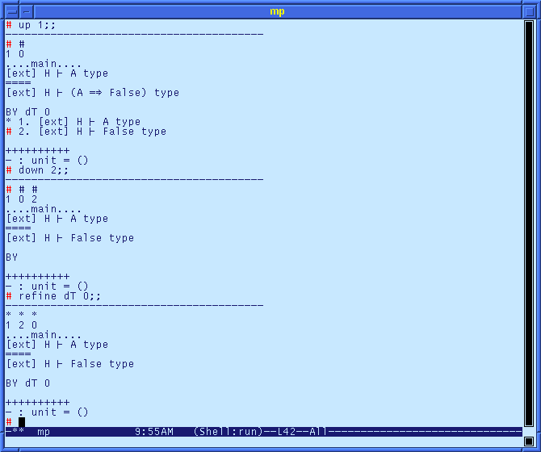
At this point, all proof obligations have been satisfied, and the proof is complete.
This was a pretty simple proof, invloving only the use of the dT tactic, and the nthAssumT tactic. The autoT tactic performs "automated" proving based on repeated application of several "basic" tactics including dT and nthAssumT. We can navigate back up the proof tree, and prove the goal in one step.
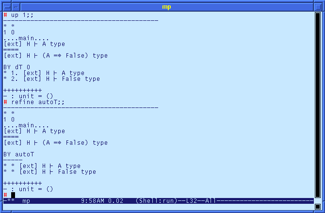
The autoT tactic proves the goal, and it preserved the previous subtrees (the roots are listed under the BY autoT line).
Using the autoT tactic, the rule for not_intro can be proved in one step. We use the thenT tactical to perform sequencing. First, we unfold the negation, then we apply the autoT tactic.
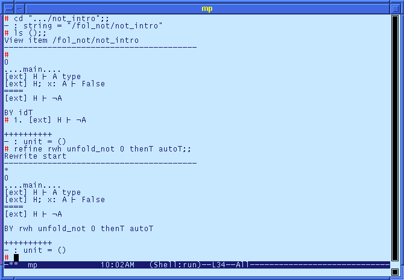
The not_elim rule is the final peice of reasoning that we have to perform. The autoT tactic does not completely prove this goal because of folding constraints. The root of the proof tree can be expanded using the autoT tactic.
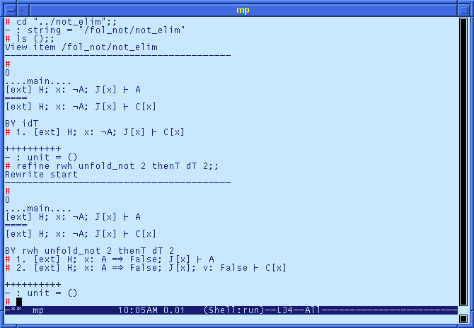
The second goal has a trivial proof.
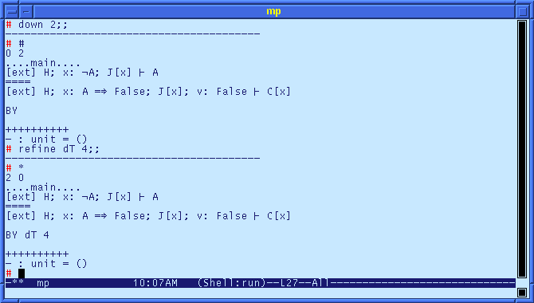
The first goal is more difficult. The goal uses the hypothesis 'A => false, and the assumption uses the hypothesis not{'A}. MetaPRL does not allow operations on the assumptions, so we need to fold the implication in the goal back to a negation. We can do this with the foldC conversion., which takes the term that is the result of the fold, and an unfolding conversion, and performs the reverse rewrite.
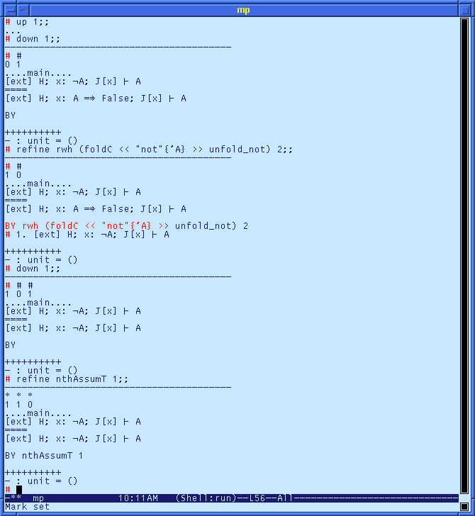
This completes the derivation. As a final step, we can change back to the module directory and check that all obligations have been satisfied.
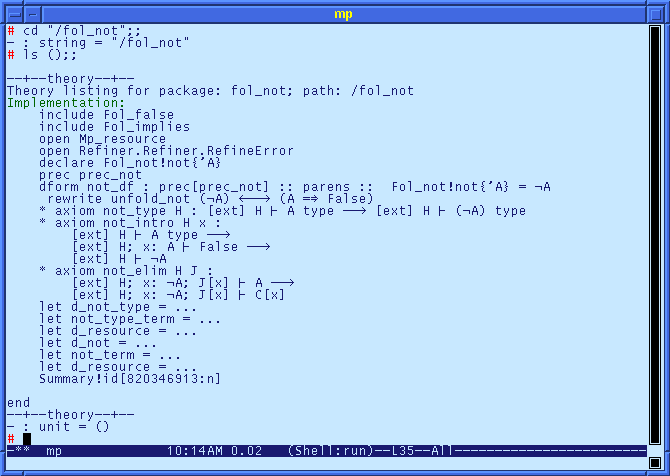
Finally, we save the theory with the save command.
# save ();; - : unit = ()
We still need to provide the automation for the dT tactic. The following code implements the automation.
6. Add the following code to implement dT automation:
let d_not_type i p = if i = 0 then not_type (Sequent.hyp_count_addr p) p else raise (RefineError ("d_not_type", StringError "no elimination form")) let not_type_term = << "type"{."not"{'A}} >> let d_resource = Mp_resource.resource_improve d_resource (not_type_term, d_not_type) let d_not i p = if i = 0 then let x = Var.maybe_new_vars1 p "x" in not_intro (Sequent.hyp_count_addr p) x p else let j, k = Sequent.hyp_indices p i in not_elim j k p let not_term = << "not"{'A} >> let d_resource = Mp_resource.resource_improve d_resource (not_term, d_not)